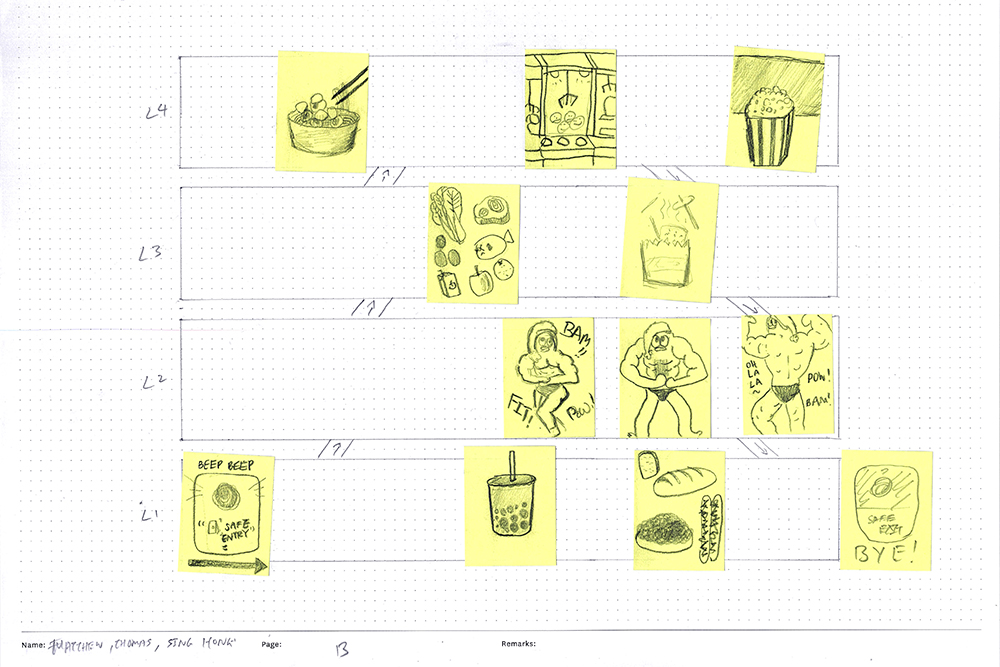

// Semester One Week Four: 06.09.21 — 10.09.21
Dissertation:
// 06.09.21 - Research: Deeper into Affective Computing. (WIP)
// 06.09.21 - Chat: Research Scope with Johnson Tan.
// 06.09.21 - Discussion: Research Methods with Olivia Angelina.
// 06.09.21 - Recap: Research Topic.
// 07.09.21 - Consultation: Research Methodology with Vikas Kailankaje.
Graduation Project:
// 08.09.21 - Workshop: Mapping Interactions.
// 09.09.21 - Experiment: Yo-Yo Machine Light Touch.
// 09.09.21 - Arduino Exploration: Addressable LEDs.
#S01W04 Appendices:
// S01W04.A - Chat: Research Scope with Johnson Tan.
// SO1W04.B - Consultation: Research Methodology with Vikas Kailankaje.
// 06.09.21 - Research: Deeper into Affective Computing. (WIP)
Took a deeper dive into affective computing and realised that most of the research required a high level of skill and knowledge to execute and it wasn't something that had been "diluted?" down to a level that everyday people could experiment with. So that might be something interesting to look at down the road, especially so to make the research possible for myself. Especially with Arduino and other hardware becoming easily accessible, it might be possible to conduct the research without the need for full on robotics and with machine learning become easily accessible, there might be a way to somehow recognise affective states as well. But this is all pending further research. I also think that I should try to find someone to help (haha) cause I think a big part of the research for Affective Computing has been focusing on helping people with autism or other problems (well at least at MIT) and that kind of makes it what is it. But without further knowledge and collaboration with other disciplines that would not be possible.
WIP RESEARCH ON PROJECTS
However there's also other research being done at places like Microsoft Research that look at other applications of Affective Computing ideas for applications outside helping people with issues, which also works as a point of research, so this would be another interesting thing to look into.
WIP RESEARCH ON PROJECTS
// End of this Section.
// 06.09.21 - Chat: Research Scope with Johnson Tan.
Refer to Appendix SO1W04.A for chat transcript.
Yet another chat with Johnson about my topic, you'll probably be seeing his name pop up a lot over the course of the year. After further developing my scope of research and topic, I thought it would be good to get another person's opinion of it before this week's consultation so as to not waste further time. My concerns with the topic as it stands was that firstly despite being situated in the context of Affective computing it was still lacking context or rather a problem(?) as well as user groups. But I really liked the exploratory nature of the topic as it gives way for many possible routes of exploration.
Secondly, I wondered if the term Affective Computing would be too large a scope, also due to the nature of that field, it's usually done at a high level of research and development, would it be possible to scale that down to a manageable, BA level project? What would the focus of the topic be on then?
Johnson managed to help provide some clarity around creating a reasonable scope of research due to his experience with his topic last year. He shared a similar appreciation and leaned towards project of an exploratory nature, and he was able to manage his scope of research last year. Our topics also shared some similarities in the sense that they were both based on research concepts that were typically done by multidisciplinary teams so we both shared a need to downscale the topic. It was also necessary to find the line between my role as a designer and the rest of the topic and to thread around it carefully as it is very easy to end up being over ambitious. Also due to the lack of knowledge in other fields, we cannot make assumptions and determine if things work or not.
Image: Breakdown of the idea. Without the mental health context.
// End of this Section.
// 06.09.21 - Discussion: Research Methods with Olivia Angelina.
Had a quick chat with Olivia regarding possible research methods that could be applied to our research topics as we shared some similar elements across our topics. But we realised that we had two very different mentalities when approaching our topics. She's in favour of using a single set of qualitative data gained through user testing to drive her research. Where she mainly wanted to compile a set of data and the let that drive her eventual graduation project. While on the other hand I was leaning more towards constant practice and experimentation to explore multiple possible routes of research as well as testing out multiple hypothesis and even if they failed, I could just repeat the process again with another idea. Through iteration and exploration to build up to a project.
This was a good chat to have as it helped us flush out our ideas further and also provided some clarity with regards to our research methods. She also brought up a good point on finding existing work, breaking them apart and finding out what makes them tick or what are some gaps in them that could be explored.
Image: Discussion on methods.
// 06.09.21 - Recap: Research Topic.
An exploration of communicating affective states as form of interactions for communicating the subtleties of remote communication through notions of telepresence and remote presence.

Image: Rough thought process to help visualize the idea.
Possible branches from here include:
Focus purely on communicating, interpreting and simulating affective states.
Focus on simple computing artefacts, to make things accessible to everyone.
Focus on communicating affective state to lead to mental health aspect of things, stress/burnout.
Research Background:
The global pandemic has made lasting changes in the way we work, learn and play, making virtual communication the primary form of human interaction. This has led to the reducing of tactility in interaction, losing the subtleties of affective states in communication. There has also been a reduction in physical presence. As meaningful social interactions and relationships are at the core of human wellbeing, there is a need to look at alternative means of staying socially connected, especially during the gaps where face-to-face communication is less available.
As affordances of computing has given way to access to easy to use software and hardware, there is the possibility of looking at the use of these systems to bring access to reduced forms of affective computing to be comprehensible by persons outside of the field of affective computing.
Research Topic:
An exploration of affective states as form of interactions for communicating the subtleties of remote communication through notions of telepresence and remote presence.
Research Question One:
How can affective states be communicated, interpreted and simulated through forms of interaction using easy to use and easily accessible software and hardware?
Research Question Two:
Could the communication of affective states be interpreted as an alternative form of non-verbal communication?
Research Question Three (Maybe):
Could this form of non-verbal communication be used to communicate through the stigma of mental health?
Methods:
Possible methods include an inquiry into existing Literature and Case Studies as means of a research framework informing the design of possible experiments. As well as conducting experiments through Quick and Dirty Prototyping with a small Usability Testing group to gather feedback and then iterating based on the feedback received.
// End of this Section.
// 07.09.21 - Consultation: Research Methodology with Vikas Kailankaje.
Refer to Appendix SO1W04.B for consultation transcript.
It's good to finally be able to progress with the RPO, with Vika's comments some key takeaways were that it was possible to further the research topic after initials experiments and that for now it's looking at possibilities as creating proof of concepts that can in turn further the research down the road. It is also important to evaluate these experiments and figure out a way to view them objectively. There's also possible room for research of these interfaces between different user groups. But for now as a starting point it'll be good to do as many experiments and then deciding what qualities and attributes that I want to focus on. Also all learning should be captured in my dissertation, try not to leave anything out.
// End of this Section.
// 08.09.21 - Workshop: Mapping Interactions.
This was an interesting workshop, drawing stuff from memory was challenging and as shown in some of the sketches, things tend to get messy at times.
Image One: My memory of the map. Image Two: Sing Hong's map. Image Three: Thomas's map.

Image: Our collective map.
Exercise One: The way each of us remembered the walk was slightly different and the way we approached drawing the map was also different, that was quite interesting. With my map I focused on the key buildings and fixed installations along the way while Sing Hong focused on the main path and animals and Thomas focused on moving objects such as people and cars. Collectively we were able to piece together a pretty decent memory of the route taken which each aspect remembered by each one of us fitting together to form a more detailed picture.
I think each person approaches a project very differently as noticed in this exercise but collaboration and peer learning is important as others might remember things that you've forgotten or they might have a different perspective that could fit well with yours, filling in each other's gaps. Only then you can have a good look at the bigger picture and then potentially identify smaller gaps that you and others had missed out on.
Image One: My mapping of NEX. Image Two: Sing Hong's Compass One. Image Three: Thomas's Rivervale Plaza.
Image: Our collective mall.
Each of us drew a different mall, but we could collectively agree that despite having been to these malls countless amounts of times, there were still blind spots where we forgot about things. Especially for me, I even combined the basement one, level one and level two of a mall mixed up and combined them together. I think that speaks more to the design of the mall than my memory? NEX is just one of those malls that have everything and anything anywhere and it's really messy. One key point is that I also noted out parts of the mall where that are major choke points as sometimes there's only one escalator that brings you to the next floor despite it being such a big mall. Truly a really frustrating mall.
The approach we took to mapping out a person's journey through a mall was based on our collective thoughts on possible distractions that we personally would be distracted by. The mapping is largely influenced by our personal experiences and we also wanted to include as many distractions and detours that would occur as well that's just how malls are planned.
My takeaway here is that NEX sucks, just kidding. I think even though journeys can be thought through and designed, there are still gaps and flaws. Things will slip through the gaps and even as I'm writing this, I just remembered that there's another set of escalators at NEX, but it's tucked in a corner away from the majority of traffic and well I just forgot about it. It might be better to design a simple and straightforward user journey, but that will make things too streamlined and people won't be able to explore other parts of the journey. Sort of like a game? It's important to design the main story through, but there's also value in leaving out areas for side quests, so that the person can explore more making things more interesting. Cause looking back at the journey we mapped out collectively, despite there being distractions, it's pretty straightforward and kind of boring.
Image One: My kitchen. Image Two: Sing Hong's kitchen. Image Three: Thomas's kitchen.
I spend a lot of time in the kitchen. This is one of the spaces that I have completed memorized and can walk through it looking for things in the dark. But to be fair it's a really simple kitchen. Thomas and I have similar kitchens where we have our fridges facing our sinks and then the cooking area opposite of them, the difference lie in our entrances. Sing Hong's kitchen is a bit different where her fridge is on the same wall as the cooking area and away from the sink, but despite that there is still a triangle formed around the commonly used areas.
This was a valuable exercise as I realised that a user's journey can also be somewhat the same despite having different elements around it, shift some things around and they might look totally different having elements in different locations, different entry or exit points but the journey still remains somewhat similar.
This two part workshop was an interesting lesson on various methods of mapping elements and can come in handy when approaching ways of mapping interaction. One potential way one of these methods could be applied to my research topic is I could potentially use the method in the first exercise to gauge how much of or what is it about an interaction do people remember when coming in contact with different artefacts that I'll be experimenting with. The method in exercise two can also be explored to remember that there is more to interaction than just the straightforward interaction. There are more factors to be thought of and mapped out.
Experiment: Yo-Yo Machine Light Touch.
My Shopee package of sensors and other hardware finally arrived after a couple of weeks and it was just in time, after my discussion with Olivia, I could try to experiment with one of my references the Yo-Yo Machines by the Interaction Research Studio. I attempted to experiment with them last semester when working on my Research Compendium but as it was documented in my Y2 CPJ, I was unable to get them to work due to some hardware incompatibilities. So it was a good time to give it a second go.
Image: Shopee Haul.
Light Touch was one of the first projects that really got me interested in this research topic in the first place. It exposed me to the world of physical computing and made me realise that computing doesn't have to be overly complex, even such "simple" devices were enough to communicate remote presence and even though the interpretation is up to the user, it still serves it's purpose.
Parts List:
2x ESP32 Board
2x Breadboard
2x Addressable LED
2x 220ohm Resistor
2x Push Button
Jumper Wires

Images: Process of installing Light Touch Firmware.
Images: Light Touch before and after putting together hardware.
IT. WAS. NOT. WORKING. Honestly have no clue as to why it wasn't working. Tried rewiring the hardware, flipping the LEDs around (wasn't about to make that mistake again), getting other people to try it out, linking it to button instead of a capacitive touch wire. Everything didn't work. Tried digging around the Interaction Research Studio's Github repositories for open source code to take a look at them, but couldn't find it. Something good did come out of digging through their repositories though, I managed to find the repository where they stored their MQTT Broker library for the Yo-Yo Machines. This meant two things, firstly I was on the right track using MQTT Brokers to facilitate the communication between devices and secondly I could reference them when I need to create a broker of my own for my projects. So at least there was a silver lining to this experiment, however I am determined to make this work and think I will try again further down the road. When I have more knowledge on physical computing and can troubleshoot better. This also showed that despite these being simple machines, there were gaps where what if they could not work, even for me with a little bit of knowledge, it wasn't as easy as it seemed, so what about people with no knowledge at all? Could they still get it to work? Could they troubleshoot when necessary? Thomas also came by and suggested that maybe I had bought the wrong addressable LEDs and that led to the next experiment.
// 09.09.21 - Arduino Exploration: Addressable LEDs.
On Thomas's suggestion I decided to test out the addressable LEDs on its own to make sure that they were the right piece of hardware and that they could in fact change colour on command. Tldr, they work.
Parts List:
1x Arduino Uno R3 Board
1x Breadboard
1x Addressable LED
3x 220ohm Resistor
Jumper Wires
// End of the Week
// S01W04.A - Chat: Research Scope with Johnson Tan.
Matthew Lau
So basically where the topic is at is that "An exploration of affective communication through a material-centered approach to interaction design of physical computing artefacts."
Johnson Tan
Ouhhh interesting, Sounds cool, This sounds clearer to me. Don’t know whether I got the wrong idea or not. Affective communication with a machine AHHAHA so interesting, Machine having emotions. Jodi wanted to mimic students by expressing fear through machine. Then Guo Wen asked her to capture the sense of fear is the key for her installation. JUST PROPOSE. INTERESTING.
Matthew Lau
Almost there, but it's actually more of using machines to interpret and simulate emotions.
Johnson Tan
Ouhhh, emotion here is tricky, cause machines have no emotion. But there are people out there trying to replicate their "emotion" into machines. Just propose it.
Matthew Lau
That's basically affective computing. Could you take a read "// 31.08.21 — 03.09.21 - Thoughts: Some wild ones." of my cpj just to get caught up with where I've progressed with the topic? I've further researched and it has led to "An exploration of affective communication through means of remote communication to communicate stress and burnout."
Johnson Tan
Ouhh so you're bringing mental health into the picture.
Matthew Lau
Yeah I think that's a logical next step for affective computing, it also helps provide a context for things.
Johnson Tan
When you introduce another element into the topic would make things more interesting, but it also means there needs to be some science/proof behind it. Means might need to interview people from mental health related areas for your dissertation.
Matthew Lau
Yes there is some research going on with regards to stress at the MIT level and Microsoft research level. This has been quite well documented within the field of Affective Computing but that might also means that it won't be anything new.
Johnson Tan
Hmmm I mean it has quite a lot of potential. But you must distinguish the fine line between a designer and a mental health doctor. Cuz MIT got a multidisciplinary team doing it. You a lone designer must define what is the scope and intent of your research. Are you designer through just a lens of a designers (speculative). Or will you be working with people with mental health knowledge. Can propose but that is what the lecturers asked me when I was researching about materials. Something very out of a design communicator comfort zone. Just need to clear with the scope and see whether viable or not.
Matthew Lau
Yes, ok so i did do some thinking about that. I think the line is drawn where i will attempt to explore a means of communicating the stress. So i am not trying to get you to not be stressed or trying to predict your stress level, I will be looking at ways where when you're feeling stressed, you can communicate it to someone else. Sort of something like a "buddy-system". Maybe it could be a way of sensing when you're stressed by you interacting with something/ the surrounding and then that gets communicated to your buddy who will then check in on you? Need to explore further. It could also just be something that you trigger to alert someone.
Johnson Tan
So it through behavioural detection to determine the stress level? Or self-triggered?
Matthew Lau
Well I mean that's left to the research to inform me. I'm quite limited working alone as you've mentioned, I'm no inter-disciplinary team that can tackle everything. But for me I think I just have to remember to tie it back to the aspect of communication as that's my anchor back to design communication. So there's this focus on finding a way to communicate my affective state.
Johnson Tan
So since you are in the topic of stress/depress are you trying to link it to the recent spike of Singapore's mental health states? Just wondering
Matthew Lau
Well yes I did somewhat consider that, but so far my link to mental health came from the premise of Affective Computing which was about using computing to help advance human wellbeing by developing new ways to communicate, understand, and respond to emotion, which was already somewhat forming the basis to mental health.
Johnson Tan
So maybe your dissertation could be studying whether would affective communication through physical computing be viable to the mental health industry?
Matthew Lau
Ok so viable as in like devices to aid the mental health professionals? Feels like that's a bit out of my ability and scope. Which brings me back to my focus on communicating. From what I've seen, affective computing is very useful to people on the autism spectrum who have issues communicating how they feel, and a bulk of research has been done in that field. So what I was thinking was that could this same idea, help people communicate through the stigma of mental health? People don't like to verbally talk about such issues, so could there be another way?
Johnson Tan
Okay then you as a designer, knowing this information, what can you do? or what do you wanna do? Inform people? Inspire people? Educate people?
Matthew Lau
Help people, maybe even empower people? I want to create this outlet of help instead of just talking about it or raising awareness. I want to use computation to explore this means of this “aid” that can be used and interpreted by people. I know that there's no way I can find a "solution" but I can sure explore ways to go about it, whether or not it's effective that's another thing all together. But at least trying would be good? So now I’m thinking about just providing this outlet for means of communicating these affective states. Cause it’s not something that’s easy to communicate.
Johnson Tan
Okay so the aid is to what extend? Cuz stress, anxiety, depression though they maybe intertwined or connected, they differs. Also in different age group and context would be different as well. Mapping out your boundaries is important also. Too broad makes the project diluted. Are you trying to explore artefacts for the consumers/people to help them OR are you trying to explore opportunities for the mental health associations as an alternative solution?
Matthew Lau
For people to help them. Cause I think I have to start small here, cause i'm no neuroscientist or psychiatrist, I'm also not an engineer or computer scientist, so exploring opportunities for the mental health industry would be a far fetch from where I'm standing now.
Johnson Tan
Yeah, then how could you say that it would help them? AHAHAHHA With that the lecturers might question about the mental health part. So the phrasing of your intent is important. Sometimes the research might says its possible, but how to prove that your artefact could help others? The part about mental health industry, maybe its possible, because there is a gap in the mental health sector that there are not using machines to help people. Is there a reason for that? Is it because we are too slow or does it not work? There has to be a GAP. You don't have to achieve, its proposing.
Matthew Lau
Affective computing has actually been applied in the US, at least as a point of research. Here are some links: AI for assessing depressive symptoms, Wearable skinbot, bioessence. Yeah so this isn't that new a field in this aspect, there are some documentation and those are just the MIT examples, there's also studies done by places like Microsoft Research. So I was thinking of leveraging on those ideas but work on it in a different way.
Johnson Tan
Oh yeah its not new anymore huh, Okay for now, you can just propose this idea first, But be clear about affective communication.
Matthew Lau
Yeah so, a one year BA research won't be able to even touch that level, so I was thinking of just taking those ideas, and then starting out small. Just the aspect of communicating such issues.
Johnson Tan
Okay if the lecturers ask you what is the gap that you are trying to fill, what would it be?
Matthew Lau
The gap would be the stigma of people not communicating their affective states? Due to the subtleties of remote communication, such details would often be overlooked.
Johnson Tan
For the mental health part, your scope is very important. Cause if you say you wanna help people, that's contradicting cause we are designers not doctors. There might be wicked problem. Just worried that the lecturers would not be as keen. BUT if you funnel it down to secondary students education and stuff would be more do-able. It is affective communication like buddy system but not into the physiological area of anxiety and depression. There is a gap for that because there is a rise of suicide rate in Singapore cuz education too stress and stuff. Because of covid transition being so different, schools cant handle and stuff. Then that would not be too in-depth on mental health but rather the well being. Be it to help of detect or whatever solution that one leave it to later. As a designer, now you have to define your gap, area of research and why.
Ok so after some more thinking I've broken down the aspects of the project as such.
Matthew Lau
I get that it should dive into the whole psychological thing cause that's not our area as designers. So yeah its more of just being able to communicate these affective states. What happens next is another issue for another bigger brained person.
Johnson Tan
Yeah that right and what and who are you trying to address through the means of affective communication.
Matthew Lau
So the what am I communicating is back to Affective Computing and that is the term of human emotions and related phenomena. That's already the idea of communicating feelings, emotions and moods. It's just the who.
Johnson Tan
Judging from that comment, you are good to go uh. Can have something in mind, but open to change if research states otherwise.
Matthew Lau
Do you think the context can be determined after the research? So basically I focus the research on communicating affective states, then from there I progress into how it could be applied? So basically through a series of various experiments, I gather feedback regarding them and then I say blah blah blah this could potentially be applied to blah blah blah. So the research is focused just on the way affective states are being perceived and communicated.
Johnson Tan
So what you are saying now is similar to what I did, where things are done concurrently. Meaning have to do research while doing experimentations to explore possible innovations. Need to have context and backing to back your experiments. The thought process behind your practices is crucial. The answer is Yes uh. But have to complete your school work too ahahahhaa need to balance. Start the experiment early and do it at your own pace. Okay meaning your thought process is something like: Research(reading/secondary research) > experimenting > Information gathered from experiments > got questions > Go back to the start. Like a lot of back and forth. But to do that, requires lots of time. Also remember to be flexible to changes.
Matthew Lau
Also maybe like cause the level that the other places do affective computing is intense like engineering level, so there might be some value at looking at things from a simple computing artefact standpoint. So maybe this could make such artefacts more accessible and so that even non-engineers can build them.
Johnson Tan
At this point you can have a few variations. Just propose them and see what feedback you get.
Matthew Lau
Rephrasing things, I think this would be a good starting point now before proposing the different variations. An exploration of communicating affective states as form of interactions for communicating the subtleties of remote communication through notions of telepresence and remote presence.
// End of Appendix A.
// S01W04.B - Consultation: Research Methodology with Vikas Kailankaje.
Vikas Kailankaje
For the prototyping, might want to elaborate on it. Also be mindful that the term "Quick and Dirty", is not universal, although I also do use it because it helps you understanding it immediately, like just use cardboard or styrofoam. Also because sometime you just need something that people can hold and role play. Might want to elaborate on the tools and processes that you are using and it's ok if you revise it later as it gives you a starting point.
Matthew Lau
Yeah it's probably necessary as for now it's probably just quick simple Arduino experiments to get the ideas across and see if it works.
Vikas Kailankaje
And for those who are doing something open-ended, you might want to think about how you would want to scale it, so that it's realistic for you as a student research as it's one person, not an entire team. And if you have an idea of how you might want to workshop it, you can put it down even if it's rough. But I think just be mindful, cause I know it's a bit confusing for now I think because prototyping is the main objective, you don't have to sort of think of it as Usability Testing. Because Usability Testing, often can confuse you also, because it feels like something that can come a bit later, when things are more resolved and at this moment you're looking more at feasibility, looking at what's possible and what's doable.
Matthew Lau
Could it be just like a series of prototypes that just serves as like a proof of concepts that this thing is or might be possible, and then self evaluating it.
Vikas Kailankaje
Yeah that's one way of looking at it, and you can come up with like a matrix of what you think you're trying to evaluate.
Matthew Lau
So I don't have to get people to test it out, because for now logistically it sounds quite hard because of having to go through the iterations quickly and where it's always changing, for now.
Vikas Kailankaje
Yeah, but what you need is you need a starting point, so even if let's say you have a matrix right, it doesn't have to be fully fleshed out, even for those who are doing research methods like "Interviews", you don't need to like a full interview list of questions, you just need a starter kit, so that anyone looking at it can have an idea of how you are going to get started, and then maybe this iteration will influence the next iteration.
Matthew Lau
Yeah so it's like hitting certain criteria.
Vikas Kailankaje
So the next thing is that some of these concepts are good like "Telepresence" and "Remote Presence", but I'm not sure if those are still the terms being used, cause those seems like terms that have been used for a really long time.
Matthew Lau
Yeah I'll double check those but if I'm not wrong, recently they are still in use. It's just one of those terms that has been carried through the years.
Vikas Kailankaje
Yeah but they do relate to remote communication. Actually that's all I have, but it's good that you've cleaned it up.
Matthew Lau
So the research questions are ok for now?
Vikas Kailankaje
...using easy to use and easily accessible...
Matthew Lau
Yeah so I think that's referring to how it could be used, then whether it's something to be used.
Vikas Kailankaje
Hmm I don't have an issue with questions, cause for let's say for Li Qian's one, he also has a very broad question, which I think it's ok, but as long as you don't have something where you jump ahead too quickly as I've mentioned. For his one it's trying to look at sound as an alternative for something, I told him, you can do that for anything like wind power is an alternative for oil and gas, as long as you're not trying to jump too far ahead. Although, I'm not too sure about the wording of "easy to use and easily accessible".
Matthew Lau
How I came about that, cause that's still subjective, it's actually because I came from Affective Computing which is not the most accessible thing right now because of how it relies heavily on engineering and robotics and such. So maybe it's about scaling Affective Computing down to a manageable level where people can just experiment with that.
Vikas Kailankaje
Oh thanks for that detail, you might want to add and simplify the question with regards to "easy to use and easily accessible" you might want to collapse that a bit but and you might want to add for whom?
Matthew Lau
Yeah that's something I'm still trying to figure out.
Vikas Kailankaje
I mean for now like I said it's still a broad question, so it might just be for non-experts or users to bridge digital literacy. So just to be clear it's not about educating people, it's just a bridge. Like I think for Olivia's case is that she's looking at interfaces, so anytime it's an interface. So interface is a really interesting concept, as when I was in architecture, glass is an interface. It's such an interesting material, it's clear right, the idea is that the glass is a break between indoors and outdoors. If you smash through the glass you're outdoors already, you can see right through it. There are people who have written philosophical texts about different qualities of glass, in different situations it can also be a way of seduction. Like lets say you look at these full glass that they use in bathrooms, when they start to fog up because of the steam. It's a very interesting material. So for over here you're looking at something that is tangible, and it's affective. There's ways to look at it as interfacing between things or user groups. But the reason I'm ok with these questions is because maybe in November or December you could fine tune it, and maybe it's about a particular application or context within which.
Matthew Lau
Ok cause actually I've explored some further routes where it kind of touches into a bit of communicating mental health states, or stress. As those are very big studies within Affective Computing, but then I think there's a problem where there's a line between the scope of a designer and how feasible projects in this field will be.
Vikas Kailankaje
One quick suggestion would be maybe you're working with someone. So last year there was a student who was working on OCD, Natasya. So you have to work with someone on it, cause at times you would be making assumptions, some of which might be things that have been disproven in the art therapy community or therapy community.
Matthew Lau
Yeah so like it's not within our scope and then you have to find the line and like thread around it.
Vikas Kailankaje
It's not impossible but yeah you do need to work with someone.
Matthew Lau
But I think for what I have now it's quite a fair bit of work, so it's a good point to start and see where it takes the project.
Vikas Kailankaje
But as you experiment, maybe you can decide what qualities and attributes you want to focus on. I think previously you said something to do with play, which is also something that's quite broad. I think after all Andreas might also tell you that anything can be play, but even though he encourages play, his way of doing it is just to get you to get going first. But yeah I'm ok with what you have now. Just don't forget that you're a student and your learning should be captured in your dissertation also.
// End of Appendix B.